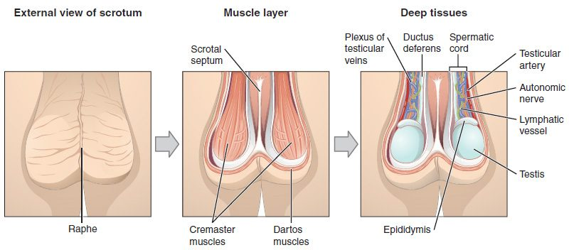
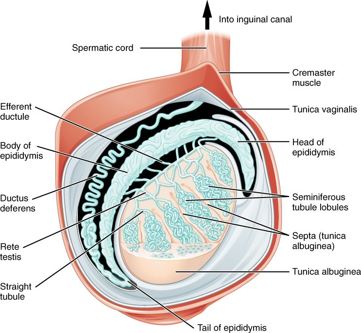
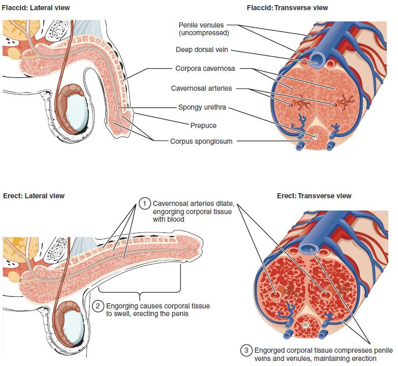

The male reproductive system anatomy comes down to three jobs: two testes make sperm and testosterone, a series of ducts stores the sperm and carries them out, and three kinds of accessory glands add the fluid that becomes semen. The penis delivers it. This page walks the whole route, from the scrotum and testes through the epididymis, ductus deferens and ejaculatory duct to the urethra, then covers the seminal vesicles, prostate and bulbourethral glands, the erectile tissue of the penis, and how your autonomic nerves produce erection and ejaculation.
The parts and the route
Start with the big picture (Figure 1). The paired testes hang outside the body in the scrotum. Sperm made in each testis pass into a coiled tube on its back, the epididymis, and from there into a long duct, the ductus deferens, that climbs into the pelvis, runs over the bladder and joins the duct of a seminal vesicle. The two join to form an ejaculatory duct, which passes through the prostate and opens into the urethra. The urethra, which you met in the urinary chapter, carries the mixture out through the penis.
![Three drawings. A standing man with a box over the groin leads to side views of the external genitals, one with the foreskin and one without, showing the shaft, the rim and cap at the tip, and the scrotum. The large bottom drawing is a side view of the male pelvis cut down the midline: the bladder, the gland below it, the paired pouch-shaped glands behind the bladder, the tube running up from the testis over the bladder, the short duct through the gland, the urethra running the length of the penis, the spongy tissue of the penis in two layers, an upper column and a lower one around the urethra that swells into the tip, and the testis with the coiled tube on its back inside the scrotum.](../figures/os-27-2.jpg)
Figure 2 shows the route as a flow, with the places the glands add their fluids.
The scrotum: a sac that keeps the testes cool
Normal body temperature, 37 °C, is too warm for making sperm. The scrotum (scrot- = pouch, bag) is a sac of skin and muscle below the penis that holds the testes outside the body cavity, where they sit about 2 to 3 °C cooler (Figure 3). A wall down the middle, the scrotal septum, gives each testis its own compartment.

Three structures adjust the temperature:
- The dartos muscle (dartos = skinned), a layer of smooth muscle just under the skin. In cold it contracts, wrinkling the skin and cutting the surface that loses heat. In warmth it relaxes, and the skin hangs smooth.
- The cremaster muscle (cremast- = suspender), strands of skeletal muscle around each testis and its cord. In cold, or when the inner thigh is stroked (the cremasteric reflex), it contracts and pulls the testis up toward the warm body. In warmth it relaxes and the testis drops.
- The pampiniform plexus (pampin- = vine tendril), a mesh of veins wound around the testicular artery. Warm arterial blood flowing down gives up heat to the cooler venous blood flowing back, so the blood is already cooled when it reaches the testis. This is countercurrent heat exchange: two streams running side by side in opposite directions.
The testes
Each testis (plural testes) is an oval organ about 4 to 5 cm long. It is wrapped in two coverings: an outer, double-layered sac with a little fluid between its layers (the tunica vaginalis), and inside that a tough, white capsule of dense connective tissue (the tunica albuginea, albug- = white). The capsule sends walls, called septa, into the testis, dividing it into about 250 wedge-shaped lobules (Figure 4).

Each lobule holds one to four tightly coiled seminiferous tubules (semin- = seed, fer- = to carry). Stretched out, the tubules of one testis would run for hundreds of meters. Their walls are where sperm are made: stem cells at the outer edge divide, and their descendants move inward, becoming sperm by the time they reach the hollow center. The next topic follows that process cell by cell.
Between the tubules lie clusters of interstitial cells (inter- = between, stit- = to stand), also called Leydig cells after the anatomist who described them. They make testosterone, under the control of LH from the anterior pituitary. So one organ has two separate jobs, in two separate places: sperm inside the tubules, testosterone between them.
| Seminiferous tubules | Interstitial (Leydig) cells | |
|---|---|---|
| Where | Coiled tubes filling each lobule | In the connective tissue between the tubules |
| What they make | Sperm | Testosterone |
| Kind of product | Cells released into a duct system | A hormone released into the blood |
| Gland type it resembles | Exocrine: the product leaves by ducts | Endocrine: no ducts |
| Pituitary hormone that drives it | Mainly FSH, with testosterone | LH |
At the back of the testis, the tubules straighten and drain into a network of channels called the rete testis (rete = net). A dozen or so small efferent ductules carry the sperm from the rete into the epididymis.
The ducts
Epididymis
The epididymis (epi- = upon, didym- = twin, meaning the testis) is a single tube about 6 m long, coiled into a comma shape about 4 cm long along the back of the testis. It has a head, where the efferent ductules enter, a body and a tail. Sperm take several days to pass through it: estimates in men range from about 2 days to about 2 weeks. Sperm leave the testis unable to swim forward; they gain that ability as they travel the epididymis. Its tail stores mature sperm until they are ejaculated. Stored sperm that are not ejaculated are eventually broken down and absorbed.
Ductus deferens and spermatic cord
From the tail of the epididymis, the ductus deferens (duct- = to lead, de- = away, fer- = to carry; also called the vas deferens) runs about 45 cm. Its thick wall is three layers of smooth muscle, which squeeze sperm onward in waves during ejaculation. It climbs from the scrotum in the spermatic cord, a bundle wrapped in connective tissue and cremaster muscle that also holds the testicular artery, the pampiniform plexus, nerves and lymphatic vessels.
The cord passes through the inguinal canal (inguin- = groin), a short, slanting passage through the muscles of the lower abdominal wall, just above the groin crease. The canal is the path the testis took on its way down before birth. It leaves a weak spot, which is why inguinal hernias, loops of intestine pushing into the canal, are far more common in males.
Inside the pelvis, the ductus deferens runs over the ureter and down the back of the bladder, where it widens into an ampulla (a flask-shaped swelling). A vasectomy cuts and seals the ductus deferens on each side through a small opening in the scrotum. Sperm can no longer reach the urethra, but the testes still make testosterone, and semen volume barely changes, because most of it comes from the glands downstream.
Ejaculatory duct and urethra
Behind the bladder, each ductus deferens joins the duct of a seminal vesicle to form an ejaculatory duct, about 2 cm long. The two ejaculatory ducts pass through the prostate and open into the urethra. From there the male urethra, 18 to 20 cm long, carries both urine and semen, never at the same time. It has three parts, named for what they pass through:
- Prostatic urethra, about 3 cm through the prostate. The ejaculatory ducts and the prostate's many small ducts open here.
- Membranous urethra, the shortest part, through the muscles of the pelvic floor, where the external urethral sphincter surrounds it.
- Spongy urethra, about 15 cm, through the corpus spongiosum of the penis to the external urethral opening at the tip.
The accessory glands and semen
Semen (Latin for seed) is the fluid ejaculated from the penis: sperm suspended in the secretions of three kinds of accessory glands, all of them exocrine glands that empty into the ducts. Sperm make up only a few percent of its volume. A typical ejaculate is 2 to 5 mL and holds tens of millions of sperm per milliliter.
- Seminal vesicles (semin- = seed, vesic- = small bladder). Two coiled, pouch-like glands, about 5 cm long, on the back of the bladder. They supply about 60 to 70% of the volume: an alkaline, sticky fluid rich in fructose, the sugar sperm use for ATP, plus prostaglandins and a protein that makes semen clot into a gel right after ejaculation.
- Prostate (pro- = before, stat- = standing: the gland that stands before the bladder). A single gland about the size of a walnut, directly below the bladder, wrapped around the prostatic urethra. It adds about 20 to 30% of the volume: a thin, milky, slightly acidic fluid with citrate, zinc and enzymes. One enzyme, prostate-specific antigen (PSA), breaks down the semen clot within 15 to 30 minutes, freeing the sperm to swim.
- Bulbourethral glands (bulb- = the bulb, the swollen root of the penis). Two pea-sized glands below the prostate, in the pelvic floor, whose ducts open into the spongy urethra. During arousal, before ejaculation, they release a small amount of clear, slippery mucus that lubricates the tip of the penis and neutralizes traces of acidic urine in the urethra. It can carry some sperm.
| Seminal vesicles | Prostate | |
|---|---|---|
| Number | Two | One |
| Location | Behind the bladder | Below the bladder, around the urethra |
| Share of semen volume | About 60–70% | About 20–30% |
| pH of its fluid | Alkaline | Slightly acidic |
| Key contents | Fructose, prostaglandins, clotting protein | Citrate, zinc, PSA that dissolves the clot |
| Where it empties | Into the ejaculatory duct | Into the prostatic urethra through many small ducts |
| Common disease | Rarely diseased | Enlargement with age and cancer, both common |
Semen as a whole is slightly alkaline, pH about 7.2 to 8.0. The alkaline fluid of the seminal vesicles outweighs the prostate's acid, and it buffers the acidic environment the sperm meet after ejaculation.
The prostate in older men
Because the prostate wraps around the urethra, its growth squeezes the urine outflow. Benign prostatic hyperplasia (hyper- = over, plas- = formation: an overgrowth of normal prostate cells, not cancer) is found in about half of men by age 60 and most men by 85. It causes a weak stream, trouble starting, dribbling and getting up at night to pass urine, and can block the outflow completely. Prostate cancer is one of the most common cancers in men. It usually starts in the back part of the gland, the part a doctor can feel through the wall of the rectum, and it raises blood PSA, which is used, with care, to screen for it.
The penis
The penis (Latin for tail) has three regions: a root anchored to the pubic bones and the pelvic floor, a shaft (or body), and at the tip the glans penis (glans = acorn), a cap with a raised rim, the corona. Loose skin covers the shaft and folds over the glans as the prepuce (foreskin). Removing the prepuce is circumcision.
Most of the penis is erectile tissue: spongy tissue full of blood spaces lined by endothelium, separated by walls of smooth muscle and connective tissue. It forms three columns (Figure 5):
- Two corpora cavernosa (singular corpus cavernosum; corpus = body, cavern- = hollow) side by side on the upper (dorsal) side. Each has a central cavernosal artery. They make up most of the volume and give an erection its stiffness.
- One corpus spongiosum (spongi- = sponge) on the underside, surrounding the spongy urethra. It widens at its end to form the glans.

Each column is wrapped in its own tunica albuginea, very thick around the corpora cavernosa and much thinner around the corpus spongiosum.
| Corpora cavernosa | Corpus spongiosum | |
|---|---|---|
| Number | Two | One |
| Position | Upper (dorsal) side, side by side | Underside, in the midline |
| Contains the urethra? | No | Yes, the spongy urethra |
| Forms the glans? | No | Yes |
| Capsule (tunica albuginea) | Thick | Thin |
| During erection | Fills hard; sets the stiffness | Fills but stays softer, so the urethra stays open |
Erection
An erection is the stiffening and enlarging of the penis as its erectile tissue fills with blood. It is a vascular event run by the autonomic nervous system:
- The signal. Touch to the genitals starts a spinal reflex, and sights, sounds and thoughts add signals from the brain. Parasympathetic neurons in the sacral spinal cord (S2–S4) fire along the pelvic splanchnic nerves to the penis.
- The messenger. Their endings, and the endothelium of the blood spaces, release nitric oxide. Nitric oxide diffuses into the smooth muscle and raises a second messenger, cyclic GMP (cGMP), which makes the smooth muscle relax. (Acetylcholine plays a smaller part, mainly by making the endothelium release nitric oxide.)
- Inflow rises. The relaxed cavernosal arteries widen (vasodilation), and the smooth muscle around the blood spaces lets them expand. Blood rushes in.
- Outflow falls. The swelling tissue presses the small veins that drain it against the unyielding tunica albuginea and squeezes them flat. Blood gets in faster than it gets out, and pressure inside the corpora cavernosa rises close to arterial pressure. Contraction of skeletal muscles at the root of the penis squeezes it higher still.
The erection ends when sympathetic nerves release norepinephrine, which contracts the smooth muscle again, and when an enzyme, phosphodiesterase type 5 (PDE5), breaks down cGMP. Drugs for erectile dysfunction, such as sildenafil, block PDE5, so cGMP lasts longer. They work only when sexual stimulation makes nitric oxide in the first place. Because nitrate drugs for chest pain also act through nitric oxide and cGMP, the combination can drop blood pressure dangerously.
Ejaculation
Ejaculation (e- = out, jacul- = to throw) is the forceful release of semen from the urethra. It has two phases, run by different nerves:
- Emission. Sympathetic neurons from the lower thoracic and upper lumbar spinal cord (about T10–L2) release norepinephrine onto alpha-1 receptor proteins in the smooth muscle of the ducts and glands. The epididymis tail and ductus deferens contract in waves, and the seminal vesicles and prostate contract, moving sperm and fluid into the prostatic urethra. At the same time the internal urethral sphincter at the bladder neck contracts tightly, so semen cannot flow back into the bladder and urine cannot enter the urethra.
- Expulsion. Semen in the urethra triggers a spinal reflex. Somatic motor neurons in the pudendal nerve (S2–S4) make the skeletal muscles around the root of the penis, mainly the bulbospongiosus, contract rhythmically, about every 0.8 seconds, driving the semen out in spurts.
Orgasm is the intense sensation the brain experiences at the same time. After ejaculation, sympathetic activity ends the erection, and a refractory period follows, minutes to hours, during which another ejaculation cannot occur.
| Erection | Emission | Expulsion | |
|---|---|---|---|
| Nerves | Parasympathetic (S2–S4) | Sympathetic (about T10–L2) | Somatic: pudendal nerve (S2–S4) |
| Messenger | Nitric oxide, then cGMP | Norepinephrine on alpha-1 receptor proteins | Acetylcholine at neuromuscular junctions |
| Muscle acted on | Smooth muscle relaxes | Smooth muscle contracts | Skeletal muscle contracts |
| Result | Erectile tissue fills with blood | Semen moves into the urethra; bladder neck closes | Semen is forced out |
A memory hook: "Point and Shoot", parasympathetic for erection, sympathetic (then somatic) for ejaculation. Drugs that block alpha-1 receptor proteins, taken to relax the prostate and ease urine flow, weaken emission. With newer drugs of this kind, such as tamsulosin, the ducts and glands contract less, so little or no semen comes out. If the bladder neck does not close, semen can instead go backward into the bladder: retrograde ejaculation (retro- = backward, grad- = step). That is more typical after prostate surgery or nerve damage from diabetes.
Summary
The testes sit in the scrotum, 2 to 3 °C below body temperature, cooled by the dartos and cremaster muscles and the pampiniform plexus. Inside each testis, seminiferous tubules make sperm and interstitial (Leydig) cells between them make testosterone. Sperm pass through the rete testis to the epididymis, where they gain the ability to swim and are stored, then along the ductus deferens, which runs in the spermatic cord through the inguinal canal, to the ejaculatory duct and the urethra. The seminal vesicles (most of the volume; alkaline, with fructose), the prostate (milky and slightly acidic, with PSA) and the bulbourethral glands (mucus before ejaculation) make semen. The penis has two corpora cavernosa and one corpus spongiosum around the urethra. Parasympathetic nerves release nitric oxide to produce erection; sympathetic nerves drive emission, and the somatic pudendal nerve drives expulsion.